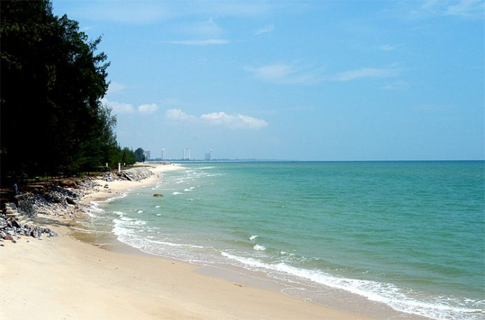

อาหารที่ชอบ
ผัดกะเพราหมูสับ
ส่วนผสม
หมูสับ 1 ถ้วย
หอมใหญ่ครึ่งหัว
น้ำมันหอย 2 ช้อนโต๊ะ
ซีอิ๊วขาว 1 ช้อนโต๊ะ
น้ำตาลทรายเล็กน้อย
น้ำเปล่าเล็กน้อย
น้ำมันสำหรับผัด
ใบกระเพรา 1 ถ้วย
พริกสดและกระเทียม สับ 1 ช้อนโต๊ะ
วิธีการทำ
1.ตั้งกระทะใส่น้ำมัน พอร้อนใส่กระเทียมและพริกสด ลงไปผัดให้พอหอม ใส่หอมใหญ่ลงไปผัดให้พอสลด ตามด้วยหมูสับยีหมูสับให้แตกออกจากกัน
2.ใส่ซอสหอยนางรมซีอิ๊วขาวน้ำตาลทรายเล็กน้อยลงไปคลุกเคล้าให้ทั่ว เติมน้ำเปล่าเล็กน้อย
3.เมื่อเนื้อสัตว์สุกทั่ว ใส่ใบกระเพราลงไป
4.ผัดคลุกเคล้าให้ใบกระเพราสุกทั่วกัน
5.ปิดไฟและตักใส่จาน
สถานที่ท่องเที่ยวที่ชอบ
ชะอำ

ชะอำ เป็นอำเภอหนึ่งในจังหวัดเพชรบุรี และเป็นสถานที่ท่องเที่ยวสำคัญแห่งหนึ่งของจังหวัด
ซึ่งมีหาดทรายขาว ยาว และยังเป็นแหล่งเศรษฐกิจด้านการท่องเที่ยวที่สำคัญ
ซึ่งเป็นรายได้ให้กับด้านอุตสาหกรรมท่องเที่ยว ธุรกิจการโรงแรม ธุรกิจการค้าของที่ระลึก ร้านอาหาร การประมง เป็นต้น
นอกจากนี้ชะอำยังเป็นสถานที่ท่องเที่ยวที่ได้รับความนิยมจากชาวไทยและชาวต่างประเทศในระดับต้น ๆ ของประเทศไทย
ลิ้งวิดีโอท่องเที่ยว
บุคคลที่ชอบ
ดเวย์น จอห์นสัน
ดเวย์น จอห์นสัน (Dwayne Johnson) มีชื่อจริงว่า ดเวย์น ดักลาส จอห์นสัน (Dwayne Douglas Johnson)
เกิดเมื่อวันที่ 2 พฤษภาคม ค.ศ. 1972 นักมวยปล้ำอาชีพและนักแสดงลูกครึ่งแคนาดา-อเมริกัน
และมีเชื้อสายซามัว เป็นนักมวยปล้ำของดับเบิลยูดับเบิลยูอี ในชื่อที่รู้จักกันเป็นอย่างดี เดอะร็อก (The Rock)
ซึ่งบางครั้งก็เรียกกันว่า ดเวย์น "เดอะร็อก" จอห์นสัน (Dwayne "The Rock" Johnson) หรือฉายาคือหินเดินได้
และเขาเคยรับบทเป็นลุค ฮ็อบส์ (Luke Hobbs) จากภาพยนตร์ชุดเรื่องเร็ว..แรงทะลุนรก
จัดทำโดย
นายปัญญาวัฒน์ ภุมมะดิลก
664485021
66/96